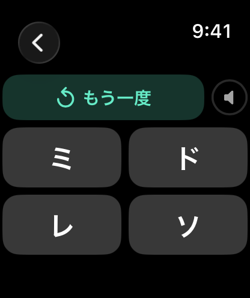
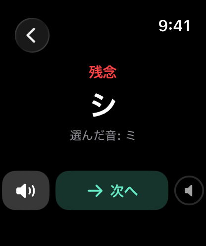
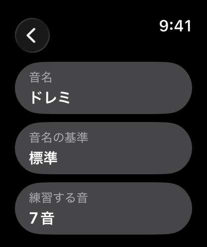
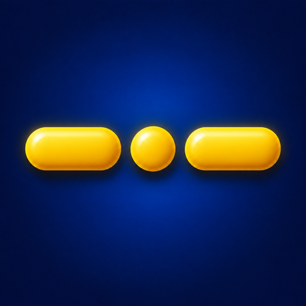
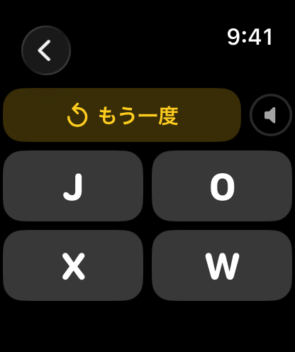

ウォッチ 学習ゲーム
Apple Watch 用の練習アプリ2本をまとめたバンドルです。ドレミ先生で音を聞き分ける練習を、モールス先生でモールス信号の練習ができます。1問ずつ短く、回答後はすぐに正解を確認。制限時間はありません。どちらも Apple Watch だけで動作し、iPhone は必要ありません。
広告なし · トラッキングなし
watchOS 8以降が必要です。
ダウンロード
2つのアプリをバンドルでまとめてダウンロードできます。

ドレミ先生 ウォッチ
音を聞き分ける練習を手首で。流れた音を聞いて、4つの選択肢から音名を選びます。
- 音名はドレミ表記と ABC 表記に対応。
- ドレミファソラシの7音から始めて、シャープやフラットを含む練習もできます。
- 自分の楽器: 「レ」が実際にどの音で鳴るかを設定すると、ほかの音名もそれに合わせて調整されます。サズ奏者のために作りましたが、移調楽器全般に役立ちます。
- 統計では、今日と累計の成績を、全体と音のセットごとに確認できます。



モールス先生 ウォッチ

国際モールス符号のアルファベット A〜Z を、聞く・打つの両方向で練習できます。
- モールス → 文字: 符号を聞いて、4つの文字から選びます。
- 文字 → モールス: 表示された文字の符号を、点と線のキーで打ち込んで確認します。タップするたびに音が鳴ります。
- 再生速度は 8〜25 WPM。初めはゆっくり、慣れたら実際の交信の速さまで上げられます。
- 統計では、今日と累計の成績を確認できます。



両アプリ共通
- 回答する前に何度でも聞き直せます。
- 回答後は正解と自分の回答を確認でき、もう一度聞くこともできます。
- 制限時間なし、聞き直してもペナルティはありません。
- 練習中は Digital Crown で音量を調整できます。Bluetooth ヘッドフォンも使えます。
- Apple Watch だけで動作。iPhone アプリなし、アカウント不要、広告なし、トラッキングなし、データ収集なし。
サポート
どちらのアプリについても、ご質問はお気軽にお問い合わせください。すべてのメッセージに目を通しています。
メールサポート
support [at] hoshinosoftware [dot] com
通常5営業日以内に返信いたします。